Platform 4.1 Changes
|
| Multi-drag sash |
A new sash mechanism has been introduced that works directly with the workbench model. This cuts
down on the number of platform widgets needed to manage a complete sash-based layout, and
has a much simpler implementation.
As an added bonus you can now place the cursor at the intersection of two or more sashes and
drag them all at the same time. When you are going to be dragging multiple sashes, the cursor
will change to one with 4-way arrows.
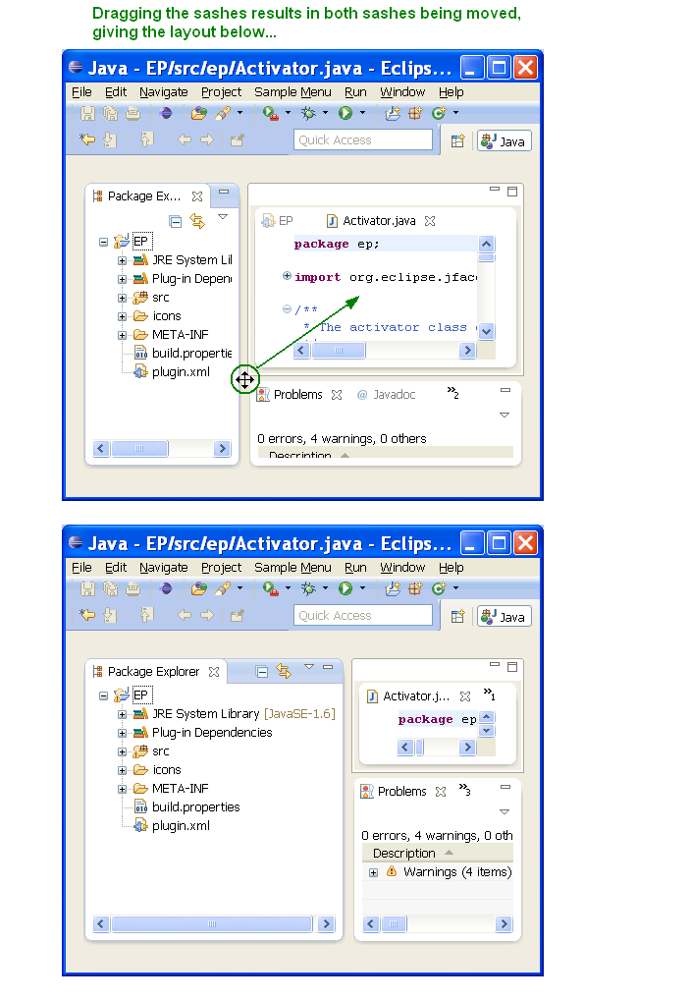
|
| Editor area |
A specialized container has been introduced to allow
the UI to properly represent the editor area. This affordance lets the user know that this
area behaves differently - for example the entire area can be maximized, and all views and
editors within the area will be affected.
This is an early implementation, and there will be a much more polished presentation coming in M4.
At minimum we won't be taking up the space unless the editor area is split.
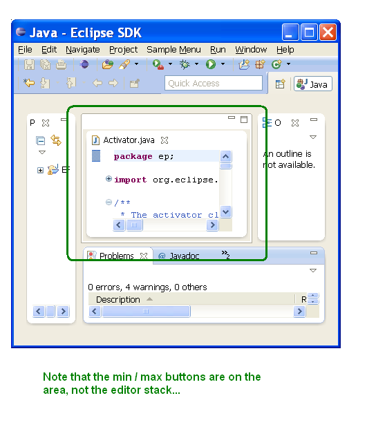
|
| Detached editors (4.1 only) |
Editors can now be detached into their own windows as of 4.1 M5. The detached
editor will not be treated any differently from an editor
contained within the workbench window. This resolves
bug 8886,
one of the platform's oldest and most voted for enhancements.
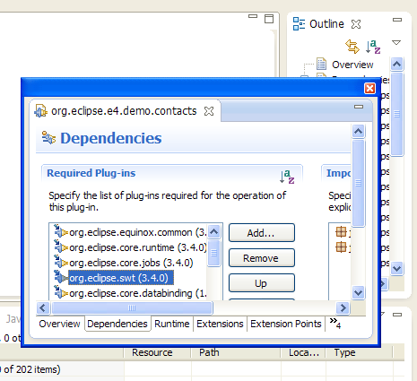
|
| Translation support in workbench model (4.1 only) |
The workbench model now supports native language support similar to what
is available for extensions in plugin.xml. In contrast to
Eclipse 3.x, the translations are done on demand and not on startup of the
application. This opens up the possibility of changing translations on the fly while the
application is running.
|
| Shared area polish |
Based on the almost unanimous feedback that the border around a shared area
was both confusing and a waste of pixels, we've done some significant polish here
(the shared area was known as the editor area in 3.x where it can't contain views).
First, you no longer see any 'area' indication if there is only a single stack there.
If there is more than one stack in the shared area, you see the area's boundary but with
less wasted space. There is now a 'fly out' hover area that will show the
min/max buttons. Let us know what you think!
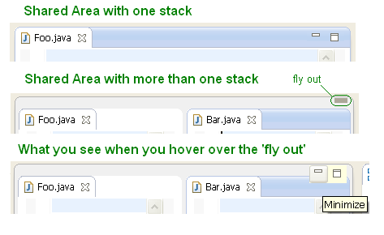
|
| Stack dragging |
You can now drag a complete stack as well as dragging individual parts. This
works the same as the gesture for dragging a part except that you start the drag using the
empty space in the tab area.
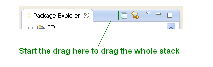
|
| Style polish |
You will see some polish on the various CSS themes based on recent feedback. The
most notable change is that we now draw an outline around the selected tab in non-active stacks.
We have also been tightening up some of the over-use of whitespace throughout the workbench presentation.
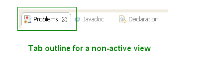
|
Platform Changes
|
| HPUX for GTK |
A new GTK port for HPUX (32 bit) has joined the lineup of supported configurations for which SWT and Eclipse are routinely built.

|
| GTK on AIX 32/64 |
Two new ports for AIX using GTK (one for 32 bit and another one for 64 bit architectures)
have joined the lineup of supported configurations for which SWT and Eclipse are routinely built.
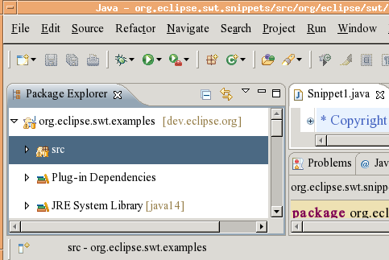 |
| Lightweight refresh on access |
Previous Eclipse versions relied on native refresh providers (on Windows)
or a polling mechanism to keep the workspace in sync with the underlying filesystem.
This capability can be still enabled by selecting Refresh using native hooks or polling
on Preferences > General > Workspace.
Now a new lightweight mechanism is available. Files discovered to be out-of-sync by the workspace, for example
while accessing the file content by an editor, will be automatically asynchronously refreshed.
If you want to refresh files this way, go to Preferences > General > Workspace
and select Refresh on access.
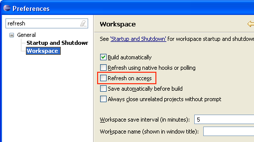
|
|
The Problems view icon shows state
|
The Problems view icon now indicates whether the view contains warnings or errors.
This is especially useful when working with maximized editor area as it allows you
to see whether there are errors or warnings without going to the Problems view:
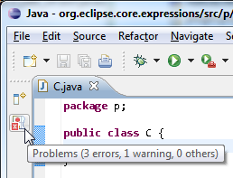
Note: Currently the icon only updates if the view has been activated before. This
will be changed in 3.7 M4 by forcing the activation so that the icon will always show the correct state
and the tool tip will give the details about the number of errors and warnings.
|
| Name and icon for wizard command contributions |
The New, Import and Export wizard items which are contributed via
commands to the menu and toolbar now show the actual wizard name and image.
Refer to the
wiki page for an example snippet.

|
| Job image overlay in task item |
When a job is reported in the task item, the image associated with the job is also shown with the progress.
|
| Document Proxy icons in Cocoa |
On Cocoa, Eclipse now supports the Document Proxy icons in the title bar of the window. You can drag it to other applications or Cmd+click to get the folder hierarchy.
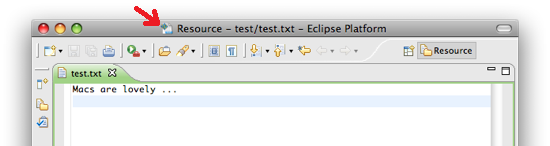
|
| Store the encoding of derived resources separately |
You can now store encodings of derived resources in a separate preferences file.
Usually the encodings for all files in each project are stored in one preference file.
If you are using a version control system and the preferences file is shared, the encodings
for all resources are shared along with it. This new option allows you to avoid sharing
encoding information for derived files, which are not typically shared in a version
control system.
If you want to store encoding settings of derived resources separately, go to
Project > Properties > Resource and select the Store the encoding of derived resources
separately option.
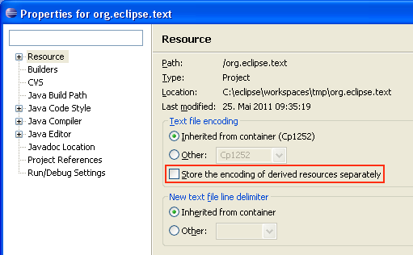
|
| Help search refinement |
The new extension point org.eclipse.help.base.searchProcessor allows for modification
of the search term, suggestion of alternate terms and modification of the list of search results.

|
| Remote help styling |
A new preference, org.eclipse.help.base/remote_css,
allows the definition of a style sheet which is included in all help pages that
originated from a remote infocenter.
|
Install/Update Changes
|
| Filtered install history |
Install states resulting from non user-initiated install operations are now filtered out
of the Installation History list.
For example, adding bundles in the dropins folder will no longer add
extra entries to the install history. Previously, these entries were shown,
but could not be reverted and the details of what changed were not shown.
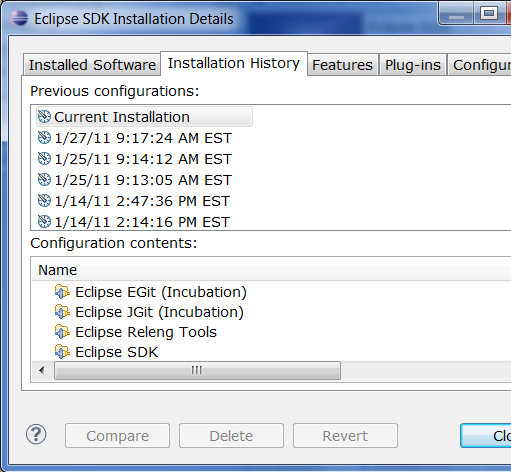
|
| Install software from file |
Sharing or persisting the set of plugins constituting your eclipse installation is now made
easy by the addition of new import / export functionality. The export functionality, available from
File > Export > p2 > Installed Software items to file, will create a description file
of your installation. This description file can then be used to recreate the installation by using
File > Import > p2 > Install Software items from file.
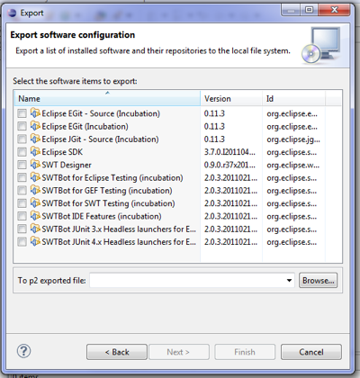
|
| Install software from another product |
You can now easily install software directly from another product.
Select File > Import > p2 > From existing installation, then select
the location of any locally installed Eclipse-based product. You can then select
what software items from that product you want to install in the current application.
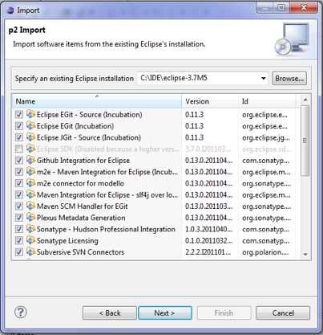
|
Editor Changes
|
|
New 'Open Hyperlink' command
|
The new Open Hyperlink command opens one or more hyperlinks at the current caret location.
The command has been added to the Navigate menu for the Java and properties file editors and can also be used in other text editors by
assigning a key binding on the General > Keys preference page.
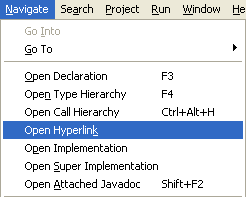
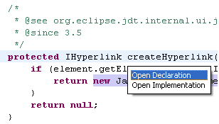
The command opens the hyperlink directly if there's only one link available. Otherwise, it shows a chooser with all
the available hyperlinks at that location. The links are the same as when you move the mouse with Ctrl pressed.
|
|
'Shift' reverses search in Find/Replace dialog
|
Pressing the Shift key while invoking a search in the Find/Replace dialog will temporarily reverse the current direction setting.
For example, if the current direction setting is 'Forward', then Shift+Enter will do the search in 'Backward' direction.
|
|
Disable smart indentation on 'Enter'
|
A new preference has been added that allows to disable smart indentation after the Enter key has been pressed:
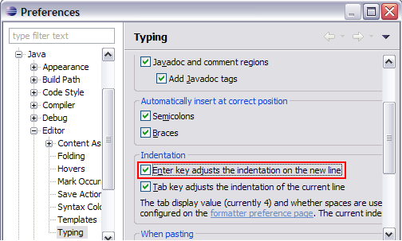
|
|
New options for whitespace rendering in textual editors
|
The Show Whitespace Characters feature for textual editors now provides additional options:
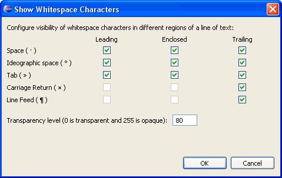
These options can be configured by clicking the 'whitespace characters' link on the General > Editors > Text Editors preference page.
|
Team/CVS Changes
|
|
Compare editor shows author on left side
|
The compare editors now also show the author on the left side:
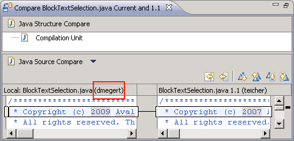
Note that the authors are only shown if Show the file author in compare editors is enabled on the Team preference page.
|
| Disable capping when comparing large documents |
You can now disable the capping mechanism to speed up finding differences in large documents.
In cases where the capping occurs, the result can either be correct or it can display too many changes, but it never misses any change.
Please remember that with this option enabled, the calculation may take more time.
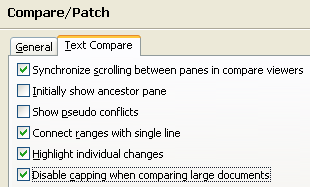 |
| Default ssh home directory on Windows |
The default ssh home directory on Windows platform has been changed
from ssh to .ssh. This way your keys and known hosts
will be shared between Eclipse and other applications by default.
If you were using ssh directory before, there is no need
to change your home directory manually. Eclipse will recognize it
and set ssh as the home directory for you.
To check your current ssh home directory see Preferences > General
> Network Connections > SSH2.

|
| ProjectSetCapability API extension |
The ProjectSetCapability API now supports SCM URLs (see http://maven.apache.org/scm/scm-url-format.html).
An URL in that format is now accepted by ProjectSetCapability#asReference(URI, String) method. Currently,
only CVS provides an extended implementation of the method.
|
| Patch Wizard Improvements |
Creating patches is now safer and the risk of data loss is decreased as
some major bugs have been solved.
If you are having trouble connecting to your repository or your repository
suffers from any data inconsistency you don't need to worry about getting an
incomplete patch without any warning. The error reporting has been enhanced and
you will be notified about all meaningful errors coming from the server.
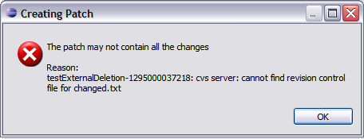
Moreover duplicated entries, unselected or missing nodes in the patch wizard tree
will be no longer causing patch content loss. Even with very complicated structures containing
projects and change sets, the tree in the Create Patch wizard will present and select all changes for you.
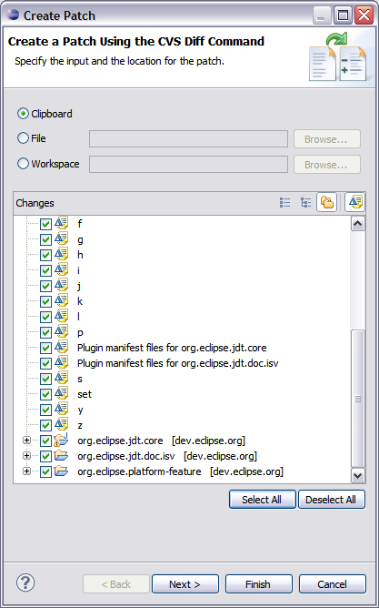
|
| Branch column in History view |
There is now a column showing branches in the History view when using CVS.
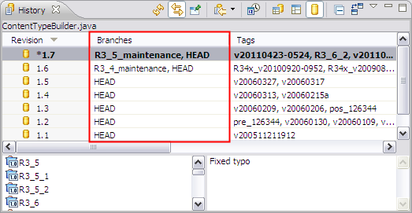
|
Debug Changes
|
| Undo support for breakpoints |
If you accidentally removed a breakpoint from the editor's vertical ruler or the Breakpoints view, you can now get it back using the standard undo functionality
- Edit > Undo Delete Breakpoint (Ctrl+Z) - in the Breakpoints view or any other view that works against the global undo history.
|
| Edit with keyboard in Expressions view |
When adding or editing watch expressions in the Expressions view, you now have the option
of activating the table cell for editing using the F2 key.
This shortcut works for existing expressions and for the Add new expression entry.
|